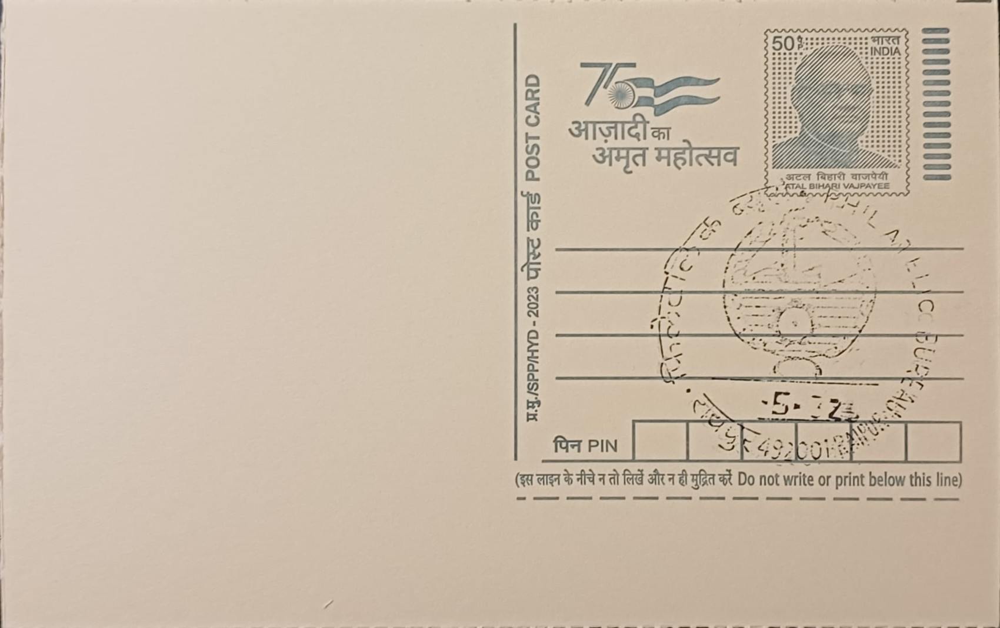

Thermal Power Plant
थर्मल पावर प्लांट


Chhattisgarh's identity as a thermal power hub traces to the discovery and exploitation of extensive coal seams in the Hasdeo-Arand and wider Korba coalfields, part of the Gondwana coal basin that stretches across central India. Industrial planners in the mid-twentieth century recognised that pairing this abundant, accessible coal with the Hasdeo River's water supply made the Korba belt a natural site for large-scale power generation. The National Thermal Power Corporation's project at Korba was cleared by the central government in January 1978, formalising what would become one of the anchor generating stations of the post-independence push to electrify India's industrial heartland, and setting the template that subsequent plants in the region would follow.
Today thermal generation is the core of Chhattisgarh's power identity, placing the state among India's largest coal-based electricity producers and its leading power-surplus states, with substantial volumes exported to neighbouring grids. The sector's significance is both economic and strategic: plants here contribute materially to national grid stability, and the Central Electricity Authority has repeatedly ranked NTPC Korba among the country's best-performing stations, recording a plant load factor of 97.61 percent between April and June 2021. This concentration of generating capacity has in turn shaped the state's broader industrial base, drawing energy-intensive steel and aluminium production into the same coal-rich districts and tying the region's economic fortunes closely to continued coal extraction and power output.
NTPC's Korba Super Thermal Power Station, at Jamnipali in Korba district, is the flagship facility, built up in three stages to a nameplate capacity of 2,600 MW across seven units: three 200 MW units commissioned in 1983-84, three 500 MW units added between 1987 and 1989, and a further 500 MW unit commissioned in December 2010. Its coal is drawn from the nearby Kusmunda and Gevra mines, among the largest opencast collieries in Asia, while cooling water is drawn from the Hasdeo River. Alongside it, the state-owned Chhattisgarh State Power Generation Company (CSPGCL) operates a cluster of its own stations in the same district, including the Hasdeo Thermal Power Station (also called Korba West, 840 MW), the Korba East and DSPM units, and the Atal Bihari Vajpayee Thermal Power Station of 1,000 MW capacity, making Korba district a dense corridor of generating infrastructure rather than a single installation.
A notable recent development has been the state government's move to expand capacity further, with the foundation laid for a new 1,320 MW supercritical plant at Korba comprising two 660 MW units, reflecting continued reliance on coal-based generation even as efficiency standards tighten under supercritical technology that reduces emissions per unit of power compared with the older subcritical units built in the 1980s. This expansion has unfolded alongside persistent friction over land acquisition, forest clearance in the Hasdeo-Arand coal belt, and the displacement of mining-affected communities, making the sector's growth a continually contested process rather than a settled one.
The Korba complex's mines and plants remain jointly overseen by NTPC and CSPGCL, with the Central Electricity Authority publishing periodic performance data that is used to benchmark individual units nationally. Environmental and resettlement concerns tied to the adjoining coalfields continue to be monitored by state pollution control and forest authorities even as output from the district is fed into the regional and national grid on an ongoing basis. The sector's trajectory in Chhattisgarh today is less a fixed monument than a working system under active expansion and scrutiny, with new supercritical units, established NTPC and CSPGCL stations, and the coal mines that feed them all functioning together as the backbone of the state's export-oriented power economy.
| Date of Introduction | January 29, 1992 |
|---|---|
| Address | Incharge, |
| Philatelic Bureau, Raipur HO-PB, | |
| Raipur (dt.), Chhattisgarh - 492001. |